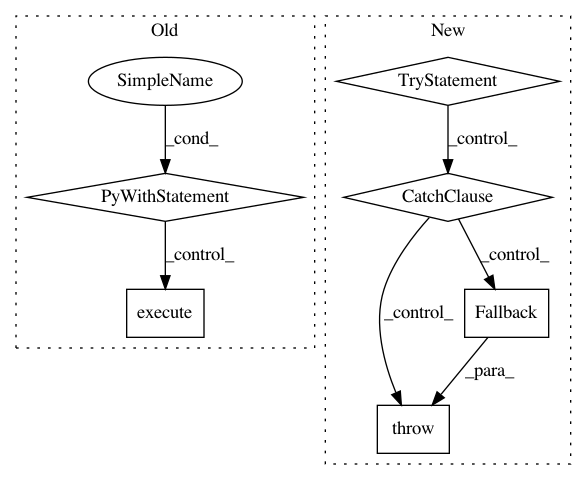

0d0103566b5d52973e66de0b5ac9b4b705d5d4f7,src/python/pants/bin/remote_pants_runner.py,RemotePantsRunner,run,#RemotePantsRunner#Any#,69
Before Change
err=self._stderr,
exit_on_broken_pipe=True)
with self._trapped_control_c(client):
// Execute the command on the pailgun.
result = client.execute(self.PANTS_COMMAND, *self._args, **modified_env)
// Exit.
self._exiter.exit(result)
After Change
port = self._find_or_launch_pantsd()
logger.debug("connecting to pailgun on port {}".format(port))
try:
self._connect_and_execute(port)
except self.RECOVERABLE_EXCEPTIONS as e:
raise self.Fallback(e)
In pattern: SUPERPATTERN
Frequency: 3
Non-data size: 6
Instances
Project Name: pantsbuild/pants
Commit Name: 0d0103566b5d52973e66de0b5ac9b4b705d5d4f7
Time: 2017-10-18
Author: kwlzn@users.noreply.github.com
File Name: src/python/pants/bin/remote_pants_runner.py
Class Name: RemotePantsRunner
Method Name: run
Project Name: pantsbuild/pants
Commit Name: ee50791d77ee69305a55e9d5b47fed12076411f4
Time: 2020-10-07
Author: greg.shuflin@toolchain.com
File Name: src/python/pants/bin/remote_pants_runner.py
Class Name: RemotePantsRunner
Method Name: _connect_and_execute
Project Name: pantsbuild/pants
Commit Name: e179d9c5614f901b5c1ff0d3b7c09247ee8b04a8
Time: 2020-11-11
Author: stuhood@gmail.com
File Name: src/python/pants/bin/remote_pants_runner.py
Class Name: RemotePantsRunner
Method Name: _connect_and_execute